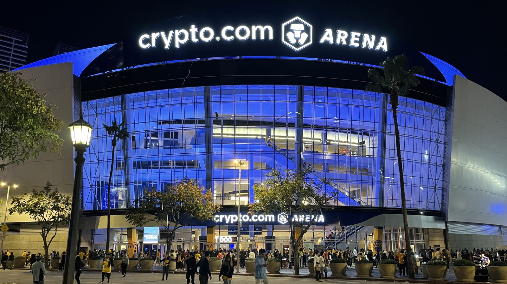

レイカーズ、バス家が最後の株式を手放す —— カシュナー氏とアイガー氏に17.8%売却、ジーニー・バスはガバナー退任へ
ロサンゼルス・レイカーズを保有するバス・ファミリー・トラストが、信託に残る17.8%の株式をジョシュ・カシュナー氏とボブ・アイガー氏に売却することを決めた。Shams Charania（ESPN）が日本時間8月18日、自身のXで一報を伝えた。

きょうだい6人、4票以上の賛成で信託の売却を可決
バス・ファミリー・トラストは、ジーニー、ジム、ジョニー、ジェイニー、ジョーイ、ジェシーの6きょうだいで構成される。Shamsによれば、受託者による売却実行を認める議決で過半数の賛成を獲得したという。これは、マーク・ウォルター氏によるカシュナー氏・アイガー氏への売却に付随する「タグアロング条項」を発動させるために必要な、6票中4票以上の賛成という基準を満たしたものだと伝えられている。なお、このウォルター氏の売却では、レイカーズの企業価値は125億ドルと評価されている。
ジーニー・バス、ガバナーの資格を失う見通し
取引が完了すれば、ジーニー・バスはガバナーとして必要な保有比率を維持できなくなるとShamsは伝えている。NBAの規定では、支配株主およびガバナーは球団の15%以上を保有することが求められているという。
バス家からの声明
バス家はESPNに声明を発表した。「私たちは家族として、進行中の取引の一環として、バス・ファミリー・トラストに残る株式をアイガー氏のグループへ売却することを決めました。私たちはレイカーズを、そしてレイカーズファンを愛しており、これからもロサンゼルスを支え続けます。しかし今は、この機会を生かして品位を保ったまま身を引く時だと判断しました」
出典: Shams Charania（ESPN）のXポスト3件（2026年8月18日・日本時間）
https://x.com/ShamsCharania/status/2089434828114665798
https://x.com/ShamsCharania/status/2089435438750560542
https://x.com/ShamsCharania/status/2089436715270258988